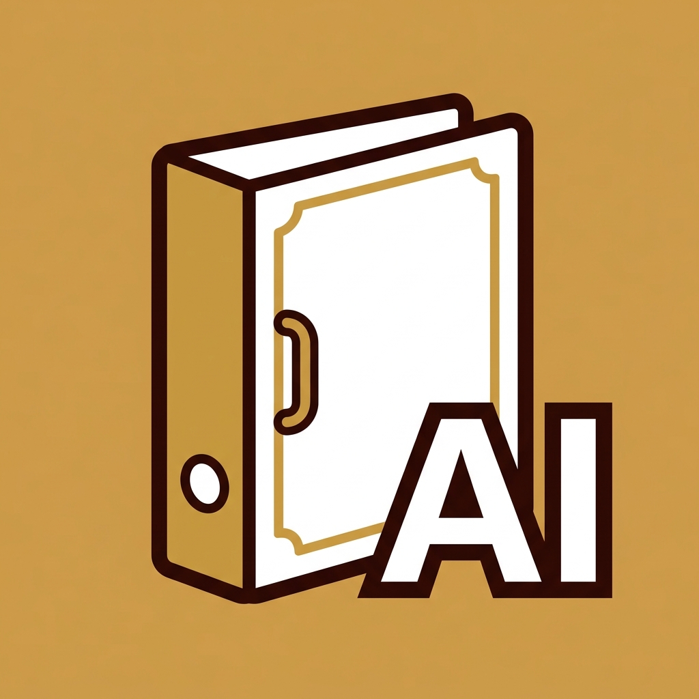
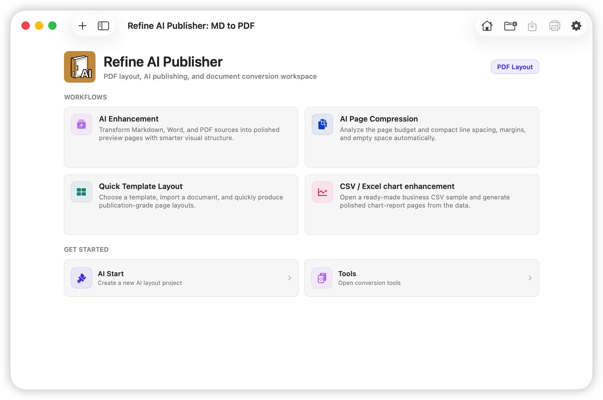
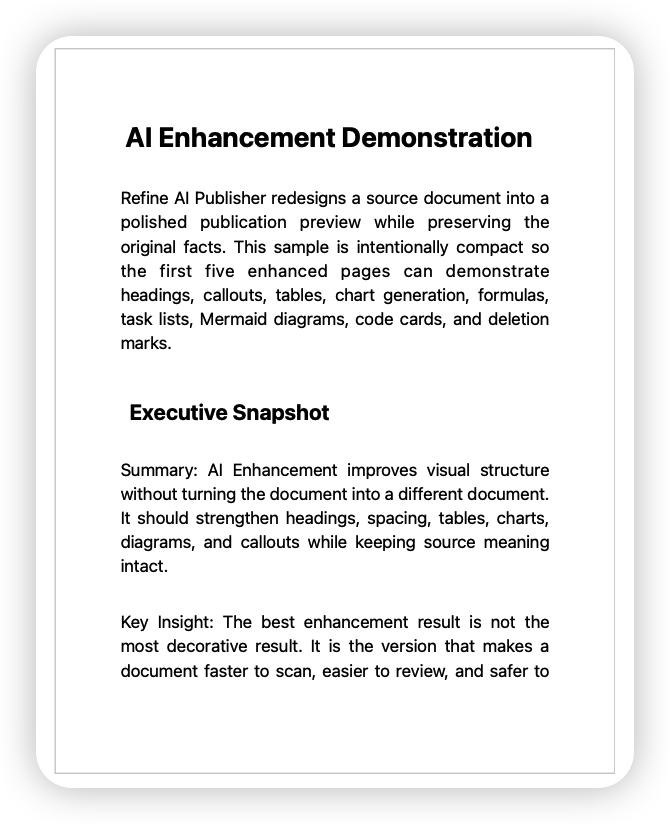
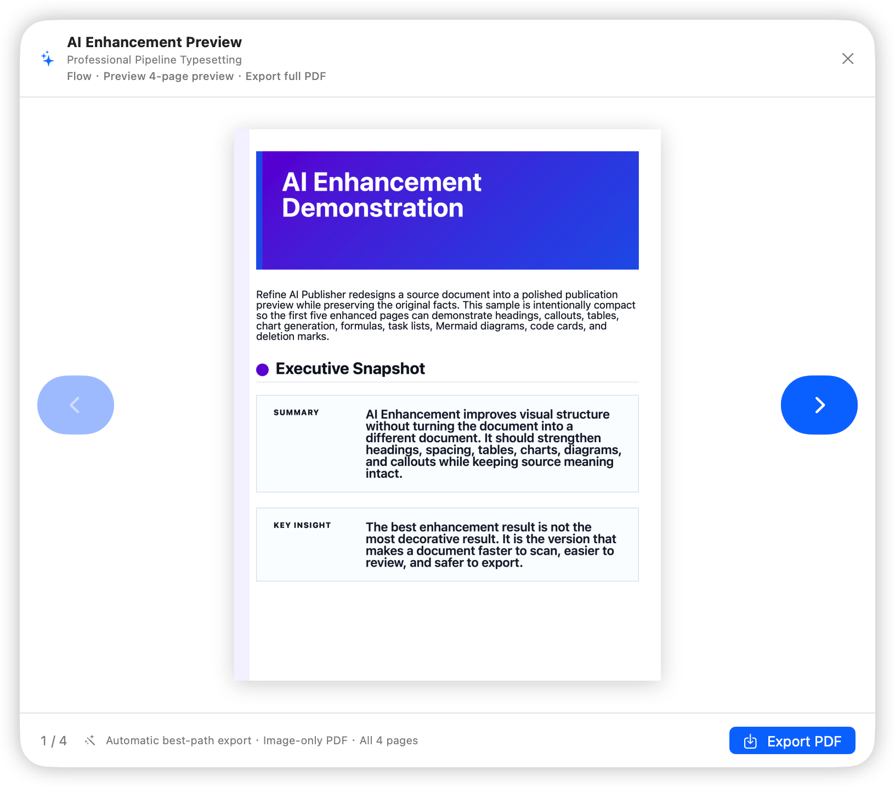
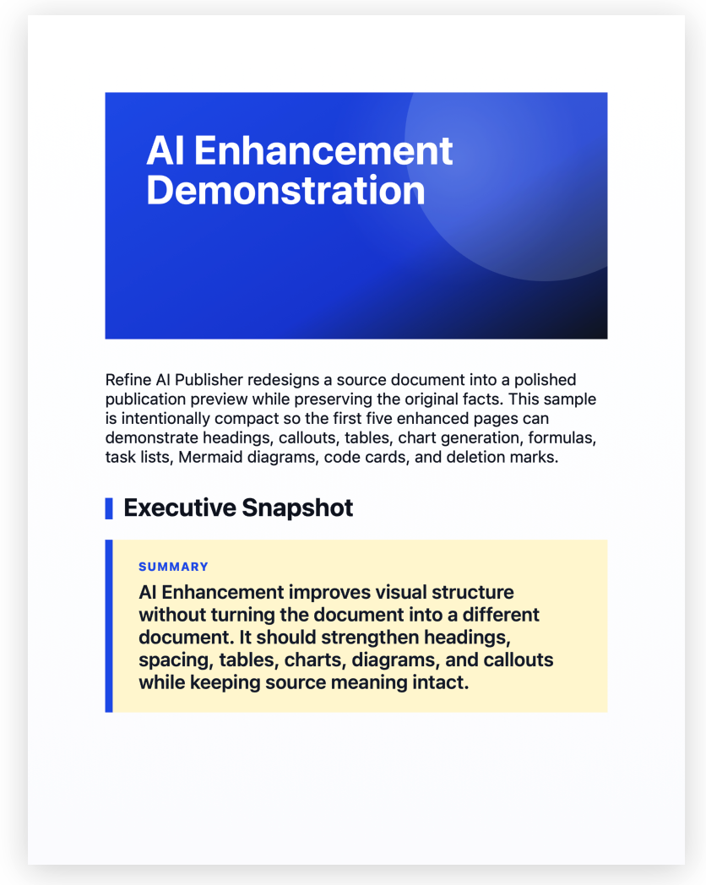
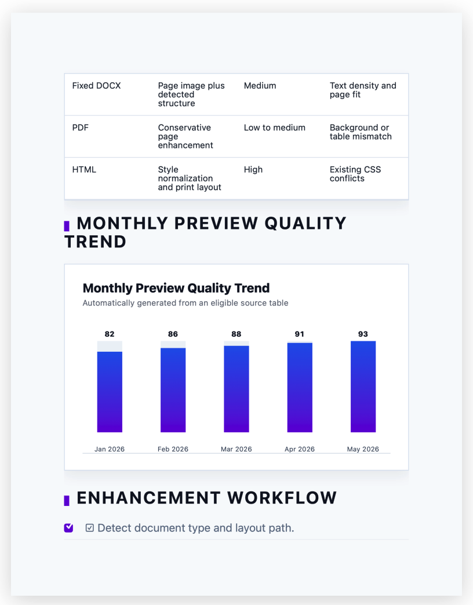
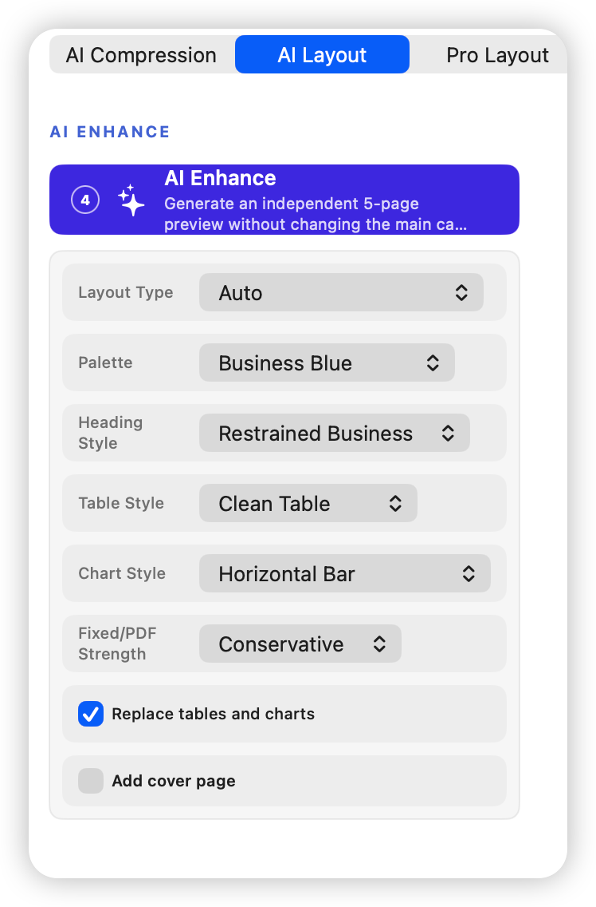
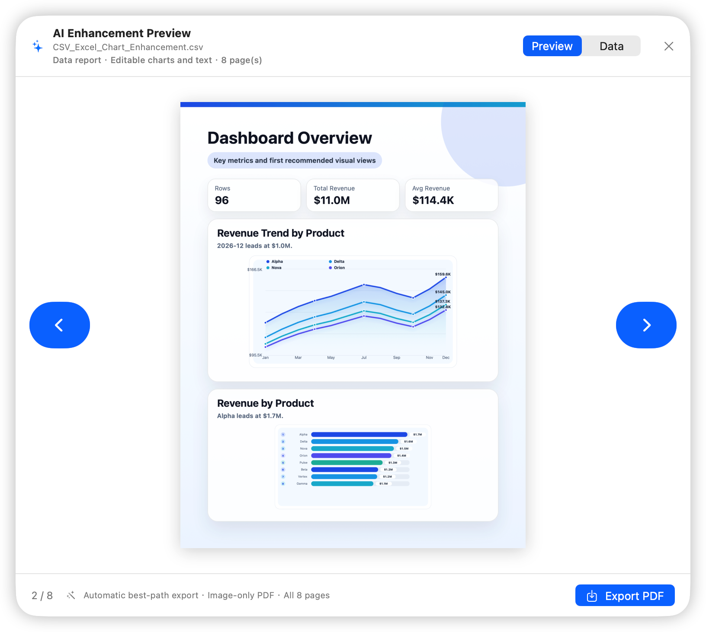

Markdown to PDF
Write structured content and export a finished PDF with layout choices already applied.

Refine AI Markdown StudioPreview locally, then export A4 images or a PDF from the After style.
Refine AI Publisher for macOS
Turn drafts into finished PDFs with AI-enhanced previews, template-based layouts, smart tables, charts, covers, and export-ready document styles.

Publisher product preview
Publisher combines structured source material with controlled layouts, tables, charts, covers, and AI enhancement previews.


Publication features
Write structured content and export a finished PDF with layout choices already applied.
Review improved structure, headings, tables, and presentation before applying changes.
Turn raw tables into clearer visual reports and publishable data sections.
Apply consistent themes, page styles, and covers to reports, guides, and proposals.
Interface preview




Download Publisher for macOS or manage your membership online.